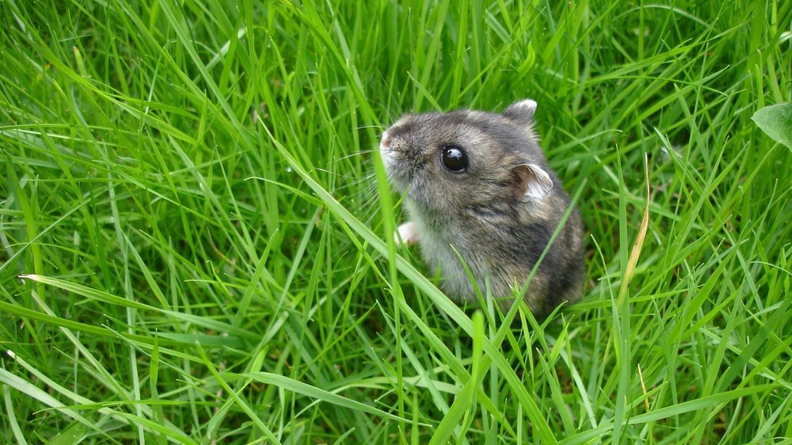
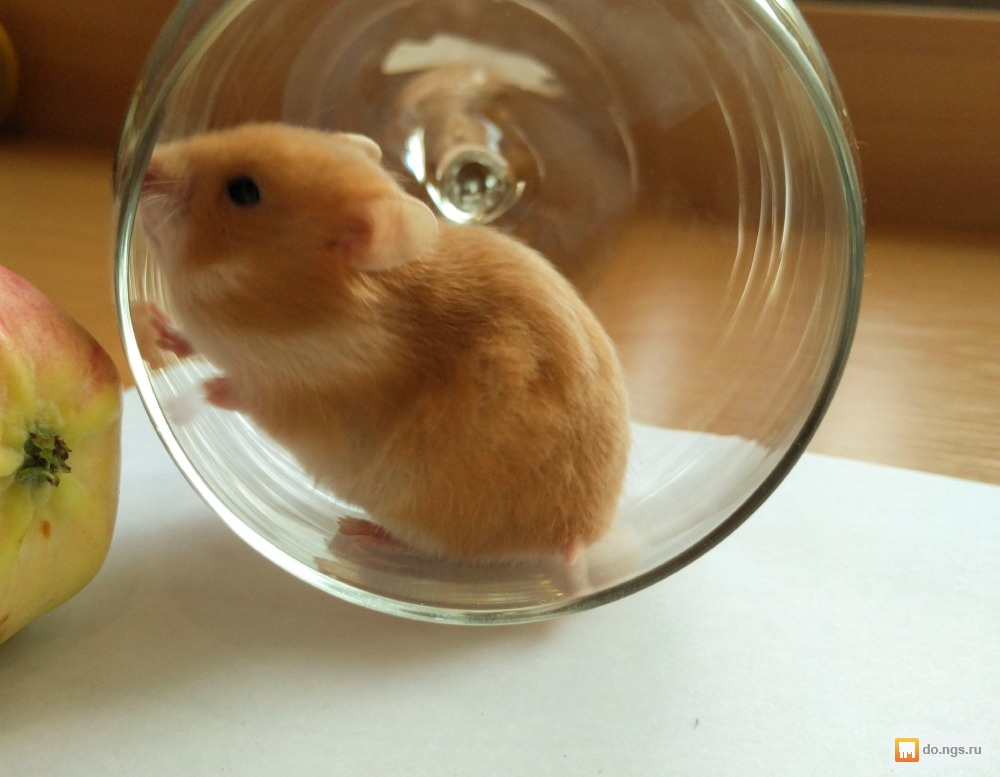
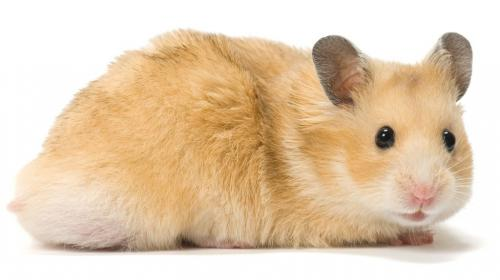

Хомяки
К семейству хомяков относятся небольшие, плотно сложенные грызуны с короткими конечностями, маленькими ушами и короткими хвостами. Длина тела варьируется от 5 до 34 см, хвоста от 0,7 до 10 см. Самки у некоторых видов крупнее самцов. Окраска густого меха на спине от пепельно- или буровато-серой до тёмной коричнево-охристой; на животе — чёрная, белая или серая. Иногда вдоль спины проходит чёрная полоса. Имеются очень развитые защёчные мешки[1].
Наземные животные; некоторые виды неплохо плавают, набирая в защёчные мешки воздух. Живут одиночно, роют сложные норы. В настоящую зимнюю спячку не впадают, но могут впадать в продолжительное оцепенение. Питаются растительной и животной пищей, преимущественно семенами. Многие виды делают запасы корма, иногда до 90 кг (например, обыкновенный хомяк).
Примерно такой хомяк живёт у меня только другого окраса и сатиновый.
Немного про моего хомяка
Лично у меня живёт сатиновый сирийский хомяк. Приобрела недавно первого декабря 2018 года. Конечно ещё немного пугливый . По ночам мешает спать из за своего колеса. Само колесо скрипит. Купила хомяка в возрасте 1 месяца. Взяли самого маленького. Раньше у меня был бежевый джунгарик звали Шустриком прожил почти 2 года. Через неделю приобрела как раз сатинового хомяка которого назвала Шушой.
Сирийские хомяки
Более крупный, чем карликовые хомячки, сирийский хомяк - также известен как золотистый или хомяк-медвежонок тедди. Сирийский хомяк - это маленький грызун, принадлежащий к семейству хомяковых. Эти хомяки быстро завоевали популярность в качестве домашних питомцев на западе с тех пор, когда в 1930 году профессор Ахарони поймал самку сирийского хомяка и ее 12 детенышей в Алеппо, в Сирии.
